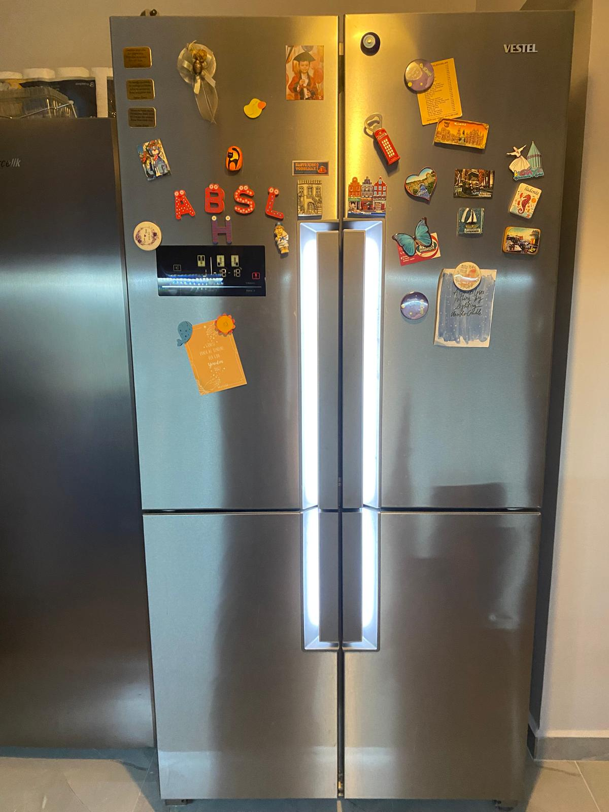
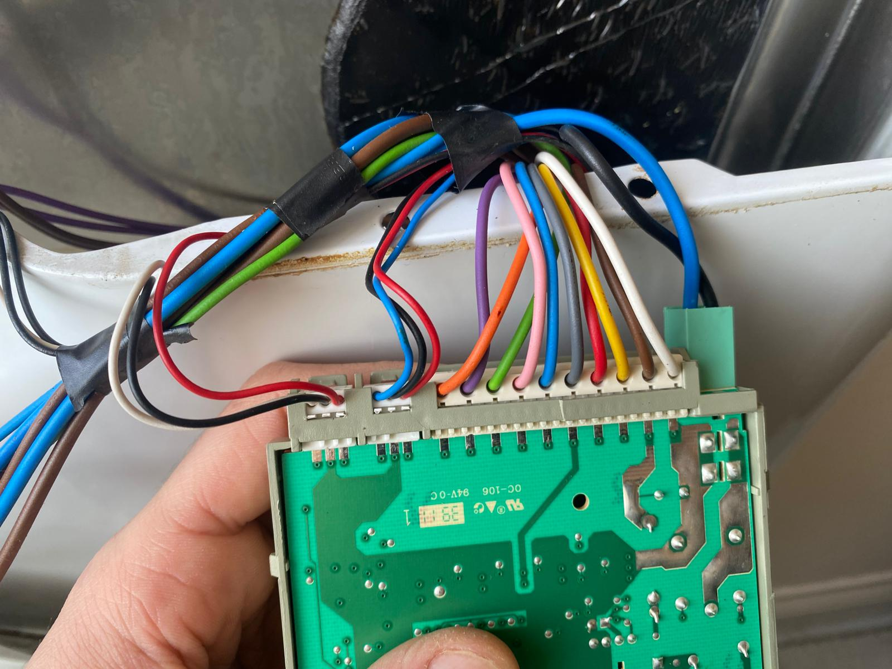
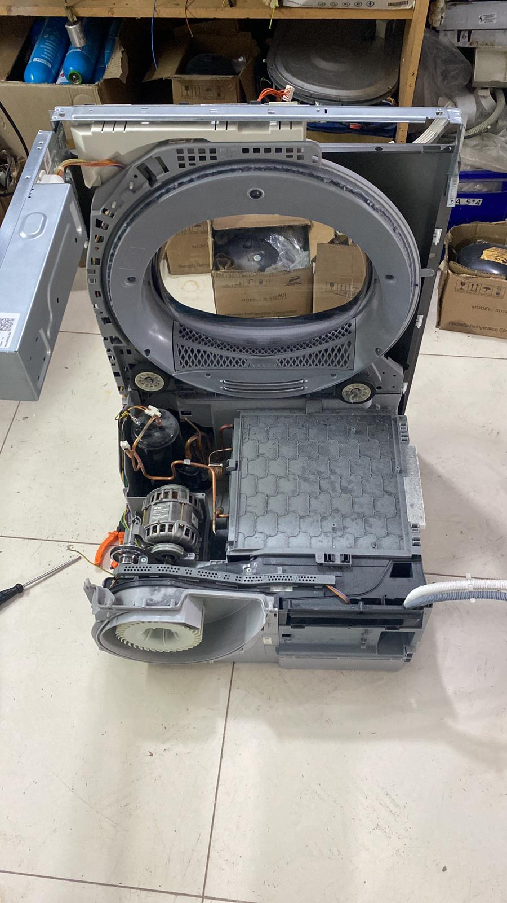

TECHNICAL SUPPORT
Refrigerator Repair
Cooling, leaking, compressor and control-board problems with technical inspection and repair support.
View service →Choose your appliance below to see the relevant English technical service and repair information. We serve customers around Pendik, Kurtköy, Tuzla and Kartal.
Share the appliance type, brand, model and problem by phone or WhatsApp for an initial service discussion.

Cooling, leaking, compressor and control-board problems with technical inspection and repair support.
View service →
Not spinning, draining, door, drum, bearing, leak and control-board problems with on-site technical support.
View service →
Leaks, poor washing, spray arm, detergent, drainage and control-board problems with technical service support.
View service →
Not drying, heating, excessive noise, filter and programme issues with technical inspection and repair support.
View service →
Cooling, freezing, frost and control problems with technical inspection and repair support.
View service →
Heating, control, electrical and cooking-related faults with technical service support.
View service →
Air conditioner inspection, troubleshooting and technical service support.
View service →
Boiler troubleshooting and technical service guidance for customers in our service areas.
View service →You can explain your appliance problem in English. Sending a photo of the appliance label or the displayed error code can help us understand the issue before the service visit.
PROFESSIONAL CARE
We explain the diagnosis, proposed work and price before your approval. Our repair warranty is separate from the manufacturer’s warranty; the scope and conditions are explained during service.
Independent repair service. We are not an authorised service centre for the brands mentioned.
We provide independent technical service and repair support around Pendik, Kurtköy, Tuzla and Kartal.